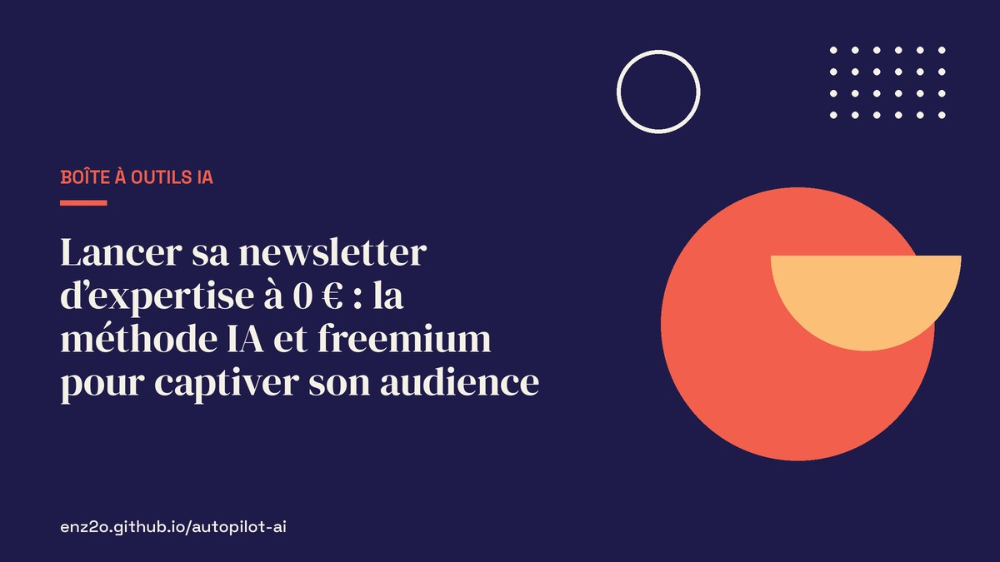

Lancer sa newsletter d’expertise à 0 € : la méthode IA et freemium pour captiver son audience
2026-11-21
Article contenant des liens affiliés.

S'appuyer uniquement sur les algorithmes des réseaux sociaux pour développer son activité est un pari risqué. Du jour au lendemain, une mise à jour peut diviser votre visibilité par trois. Que vous soyez étudiant préparant son entrée sur le marché, freelance en quête de régularité commerciale ou créateur de contenu, l'e-mail reste le canal le plus direct, pérenne et rentable.
Pourtant, deux obstacles freinent souvent les indépendants : le syndrome de la page blanche récurrent et le coût des outils d'e-mailing dès que l'audience commence à grandir. En combinant la puissance de réflexion des intelligences artificielles génératives et la générosité des modèles freemium modernes, vous pouvez bâtir une newsletter professionnelle, soignée et automatisée, sans débourser le moindre centime.
Voici le protocole complet pour lancer votre lettre d'information en partant de zéro.
1. Trouver un positionnement tranché et 12 semaines de sujets grâce à l'IA
Une newsletter qui intéresse tout le monde finit par n'intéresser personne. Avant d'écrire la moindre ligne, clarifiez votre proposition de valeur : quel problème précis résolvez-vous chaque semaine pour votre lecteur ?
Au lieu de chercher l'inspiration devant un écran vide, utilisez un modèle de langage (comme ChatGPT, Claude ou Le Chat de Mistral) pour agir comme un partenaire de brainstorming stratégique.
Voici un exemple de prompt direct à tester :
« Agis en tant que stratège de contenu expert pour indépendants. Je suis [votre domaine : ex. graphiste freelance pour e-commerces / étudiant en marketing data]. Ma cible est [décrivez l'audience cible]. Identifie 5 points de douleur majeurs de cette cible lorsqu'elle essaie de [résultat voulu]. Pour chaque point de douleur, propose 2 idées d'e-mails concrets mêlant retour d'expérience et conseils actionnables. »
En un seul échange, vous obtenez une dizaine de pistes pertinentes. Sélectionnez les six meilleures, demandez à l'IA de les décliner sous deux angles complémentaires (l'erreur courante vs le tutoriel pratique), et vous disposez de votre calendrier éditorial pour les trois prochains mois.
Pour garder vos idées fraîches sous la main au quotidien et noter les anecdotes de vos journées, un simple carnet de notes couverture rigide sur votre bureau évite d'éparpiller vos pensées entre plusieurs applications éphémères.
2. Déployer son infrastructure d'envoi sans abonnement mensuel
Les outils d'e-mailing traditionnels facturent souvent rapidement au nombre de contacts ou limitent drastiquement les envois sur leurs offres de base. Pour démarrer sereinement sans empiler les factures logicielles, il est plus judicieux d'adopter une plateforme tout-en-un disposant d'un véritable palier gratuit.
C'est exactement ce que permet Systeme.io, dont l'offre d'entrée à 0 € comprend la gestion d'une liste allant jusqu'à 2 000 contacts avec envois d'e-mails illimités, la création d'une page de capture et la mise en place d'automatisations simples. Vous évitez ainsi de devoir synchroniser un créateur de landing pages avec un service tiers via des webhooks complexes.
Pour structurer votre infrastructure de base :
- Créez une page de capture épurée (promesse claire, 3 bénéfices à puces, champ e-mail et bouton d'action).
- Associez un tag automatique à chaque nouvel inscrit (par exemple : inscrit-newsletter).
- Mettez en place la page de confirmation et vérifiez la délivrabilité de votre adresse d'expédition.
3. Co-rédiger ses éditions sans sacrifier son authenticité
Le piège le plus fréquent consiste à demander à l'IA d'écrire un e-mail complet à partir de rien. Le résultat est presque toujours terne, verbeux et reconnaissable au premier coup d'œil. Pour captiver vos abonnés, l'IA doit être votre documentaliste et votre correctrice, jamais votre substitut personnel.
Adoptez ce workflow de rédaction en 4 étapes :
- Le plan guidé : Fournissez à l'IA l'idée centrale et demandez-lui 3 structures narratives différentes (par exemple : la structure problème-agitation-solution, ou l'anecdote suivie d'un enseignement).
- Le premier jet humain : Rédigez vous-même l'histoire vécue, les exemples réels et vos opinions tranchées. Même en style télégraphique, la voix doit venir de vous.
- Le polissage par l'IA : Demandez à l'outil d'optimiser le rythme, d'éliminer les tournures passives et de vérifier la clarté des transitions.
- La phase d'accroche : Faites générer 10 propositions d'objets d'e-mail percutants (moins de 50 caractères, sans termes racoleurs qui déclenchent les filtres antispam).
Lors de ces sessions d'écriture où la concentration est primordiale, travailler avec un support ordinateur portable ergonomique vous aidera à maintenir une posture saine devant votre écran sans ressentir de fatigue musculaire après deux heures de frappe.
4. Automatiser la séquence d'accueil des nouveaux lecteurs
Le moment où un lecteur est le plus attentif se situe dans les dix minutes qui suivent son inscription. C'est à cet instant précis que vous devez établir la relation, et non attendre le prochain envoi hebdomadaire.
Concevez une séquence de bienvenue en trois e-mails espacés de 48 heures :
- E-mail 1 (Immédiat) : Remerciement chaleureux, confirmation de ce qu'il va recevoir, et invitation explicite à répondre à l'e-mail avec son plus grand défi actuel (ce qui améliore immédiatement votre réputation d'expéditeur auprès de Gmail et consorts).
- E-mail 2 (+48h) : Partage de votre meilleur contenu ou d'une ressource pratique prête à l'emploi (un modèle, une check-list ou un tutoriel condensé).
- E-mail 3 (+96h) : Présentation succincte de votre parcours, de vos services ou de vos projets en cours, en expliquant en toute franchise pour qui vous travaillez et comment vous pouvez aider.
Avec Systeme.io, vous pouvez paramétrer cette séquence automatique via une règle de déclenchement liée au tag de vos nouveaux inscrits. Une fois rédigée et intégrée, elle tourne en arrière-plan sans nécessiter d'intervention manuelle.
5. Convertir son audience en opportunités sans devenir insistant
Une newsletter n'a pas besoin d'adopter des techniques de vente agressives pour être rentable. Si vous apportez régulièrement une perspective utile à vos lecteurs, la vente devient une simple suite logique.
Voici trois mécanismes discrets et efficaces à intégrer en pied de page de chaque édition :
- Le pitch discret (soft pitch) : Une phrase courte en bas d'e-mail rappelant votre activité principale : « Besoin d'un coup de main pour auditer votre identité visuelle ? Répondez simplement à ce message pour en discuter. »
- La redirection vers un produit d'entrée de gamme : Si vous vendez un template, une session de conseil ou un mini-atelier, un lien fixe en signature permet aux plus pressés de passer à l'action.
- L'appel aux retours : Poser une question fermée en fin de lettre incite à la conversation et vous fournit des insights précieux sur les besoins réels de vos futurs clients.
Centraliser votre gestion éditoriale, vos tunnels et vos futures offres de services sur une interface unique comme Systeme.io évite d'avoir à transférer votre base de données le jour où vous décidez de monétiser plus activement votre savoir-faire.
En résumé : la régularité avant la perfection
Lancer une newsletter professionnelle en partant de rien n'exige ni budget publicitaire, ni abonnement logiciel à trois chiffres. En déléguant à l'IA la structuration de vos idées et en vous appuyant sur des solutions freemium robustes, vous supprimez la friction technique pour vous concentrer sur l'essentiel : créer du lien et démontrer votre expertise semaine après semaine.